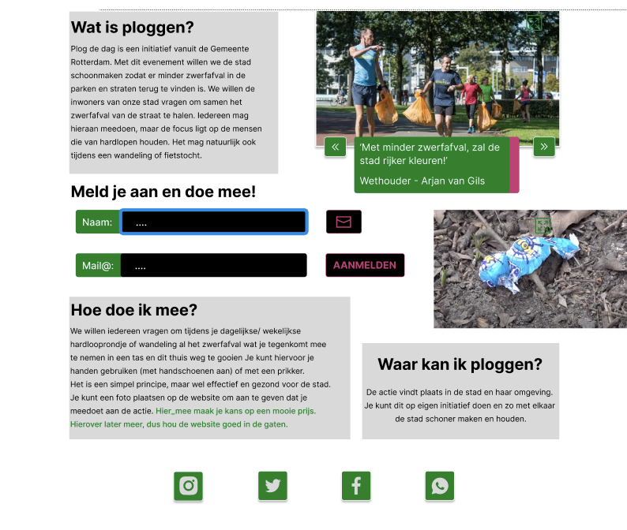
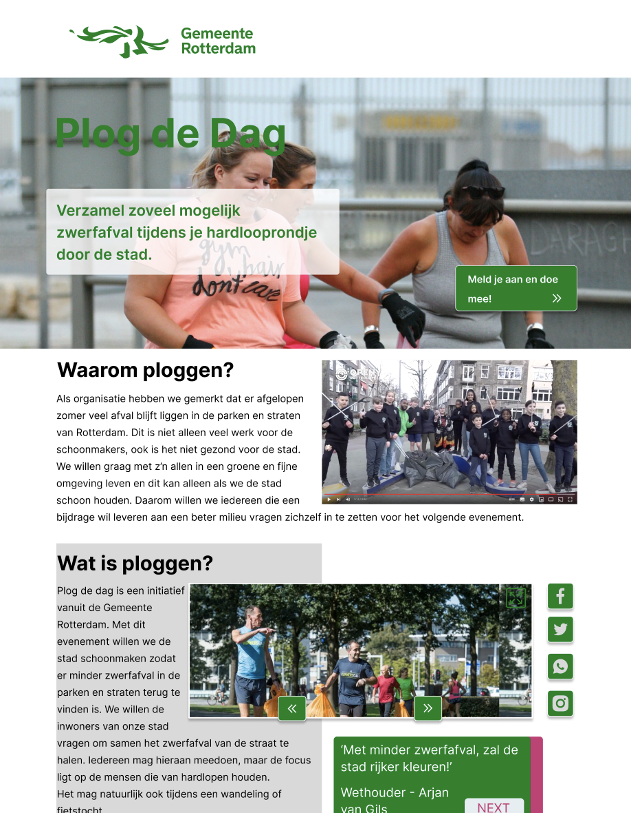
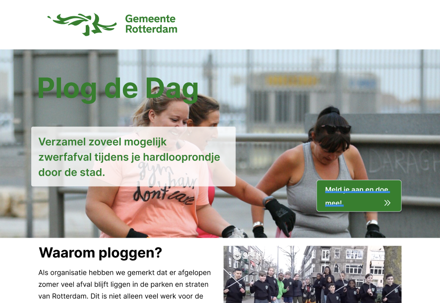
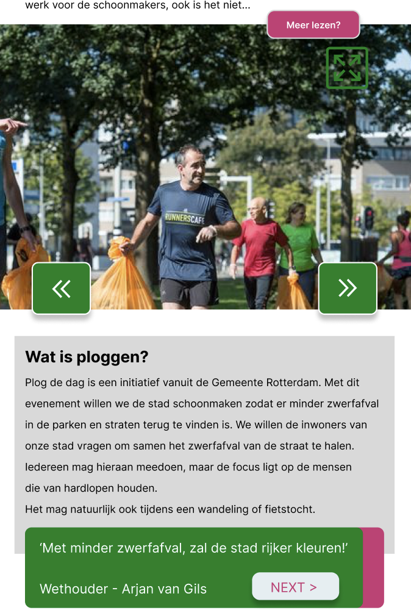
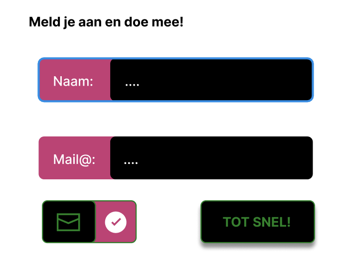
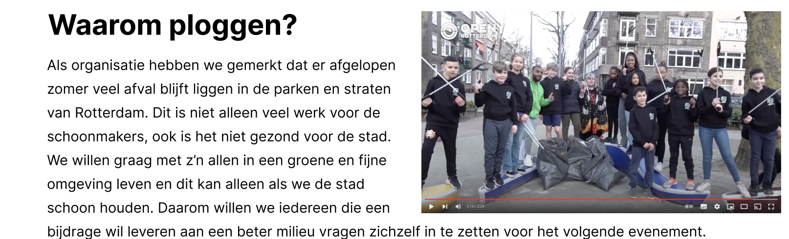
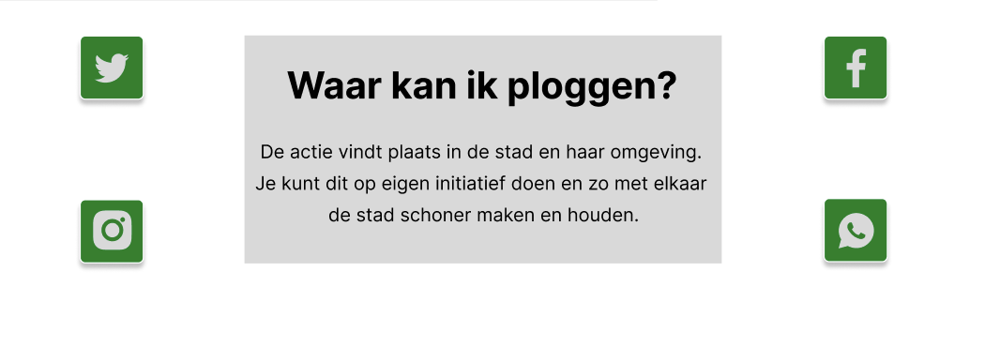

Brief
School assignment: we received a short brief + content and designed the website layout.
A responsive website concept (mobile, iPad, desktop) for a Rotterdam clean-up day where people collect litter together. Designed from a school brief with provided content.
School assignment: we received a short brief + content and designed the website layout.
Two pages: a main landing page and a sign-up page. Each designed for mobile, iPad and desktop.
Clear hierarchy, scannable info, and an easy sign-up flow with one strong call-to-action.
Figma (design + prototype)
Main page → Sign up
The main page introduces the event and makes the next step obvious. The content is split into small sections so people can quickly understand what Plog de Dag is and how to participate.
The sign-up page keeps the form short and readable. The layout is designed to reduce friction and guide users through the steps without confusion—especially on mobile.
Same system, different screens
Priority: speed + clarity. One column, strong CTA, short sections.
More breathing room. Content blocks become wider and more readable.
Stronger layout structure. Clear grouping + space for supporting visuals.
Same typography and components across breakpoints for a cohesive experience.
Export from Figma and place here






